Comece pela colina sagrada
Visite o Castelo, o Paço dos Duques e desça a pé até ao centro histórico, passando pelas ruas medievais.
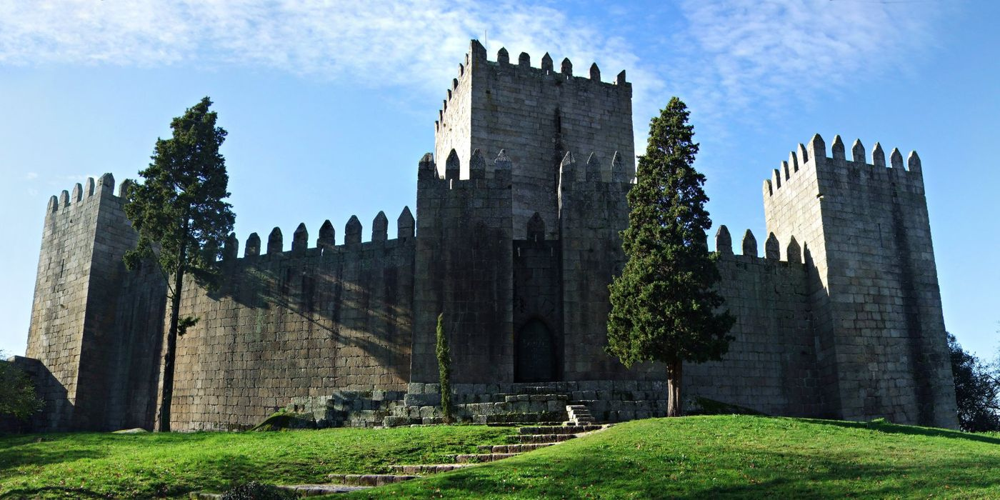
Bem-vindo a
Aqui nasceu Portugal. Uma cidade onde a história não está em museu — está na rua.
A cidade onde Portugal nasceu, com mais de mil anos de história que moldaram uma nação.
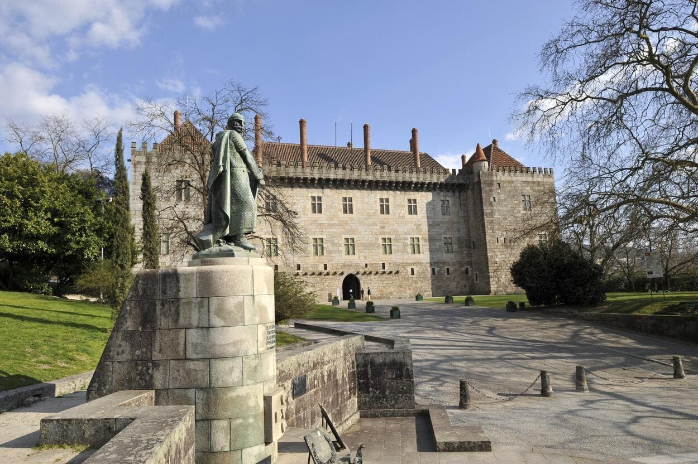
Guimarães surge como núcleo de poder do Condado Portucalense, com a construção do Castelo por Mumadona Dias para defesa contra as invasões mourisca e normanda.
D. Afonso Henriques vence a batalha decisiva nas imediações de Guimarães, afirmando a independência do Condado Portucalense e tornando-se o primeiro rei de Portugal.
D. Afonso, 1.º Duque de Bragança, manda construir o imponente palácio gótico que ainda hoje domina a colina do castelo e serve de residência oficial ao Presidente da República.
Em 2001, a UNESCO inscreveu o Centro Histórico de Guimarães na lista do Património Mundial. É um dos conjuntos urbanos medievais mais bem preservados da Europa.
Em 2012, Guimarães foi Capital Europeia da Cultura. O título trouxe novos espaços culturais e colocou a cidade definitivamente no mapa europeu.
Há muito para ver em Guimarães — desde castelos medievais a museus, passando por igrejas e miradouros com vistas que vale a pena guardar.
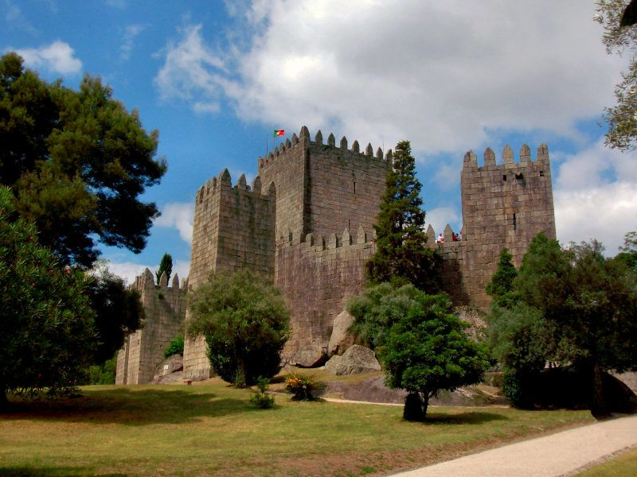
ImperdívelFoi aqui que nasceu D. Afonso Henriques e, com ele, Portugal. O castelo ainda hoje impressiona quem sobe à colina.
Saber mais →Construído no século XV pelo 1.º Duque de Bragança, é hoje residência oficial do Presidente e um dos palácios medievais melhor preservados do país.
Saber mais →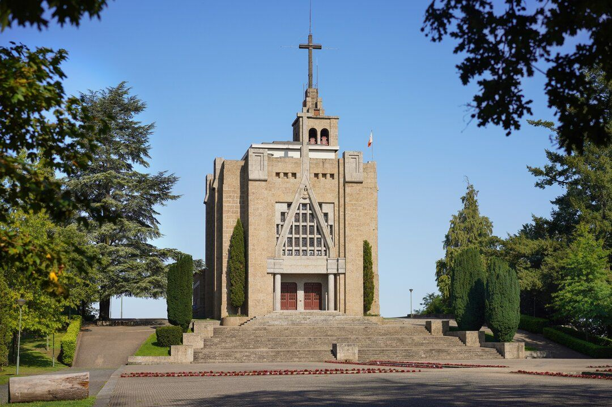
Sobe-se de teleférico ou a pé — de qualquer forma, lá em cima a vista sobre Guimarães compensa o esforço.
Saber mais →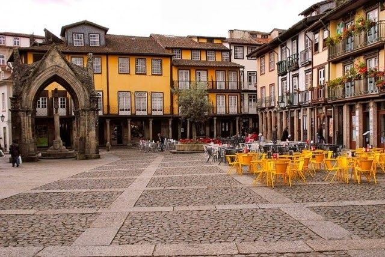
UNESCOPercorrer o centro histórico a pé é recuar no tempo — as ruas estreitas, os arcos e as praças de granito não mudaram muito em seis séculos.
Saber mais →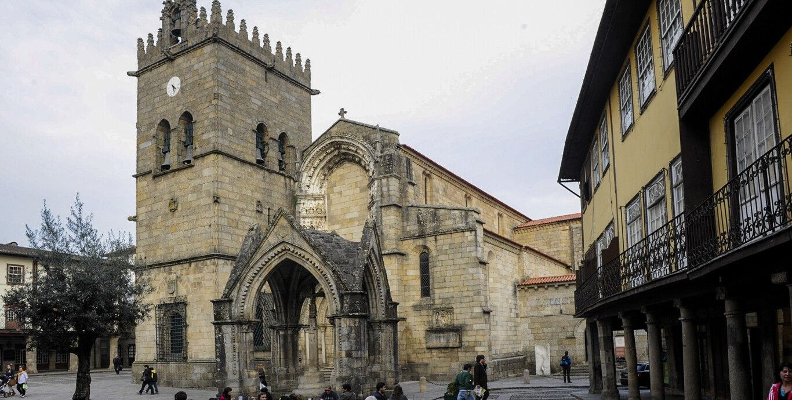
No centro do Largo da Oliveira, esta colegiada fundada por D. Afonso Henriques é o ponto de encontro da cidade há séculos.
Saber mais →Seja para explorar o castelo, subir à Penha ou assistir a um jogo do Vitória, há sempre qualquer coisa para fazer em Guimarães.
Percursos guiados pelo centro histórico e monumentos medievais.
Vistas deslumbrantes da cidade a bordo do teleférico.
Caminhadas pela Serra da Penha e parques naturais.
Museus, galerias e espectáculos ao longo de todo o ano.
Loiça de barro, filigrana e têxteis tradicionais de Guimarães.
Apoie o Vitória SC num dos estádios mais bonitos do país.
Uma sugestão prática para quem quer ver o essencial sem correr: centro histórico de manhã, Penha à tarde e sabores locais ao fim do dia.
Visite o Castelo, o Paço dos Duques e desça a pé até ao centro histórico, passando pelas ruas medievais.
Depois de almoço, apanhe o teleférico ou vá de carro até à Serra da Penha para ver a cidade a partir do alto.
Regresse ao Largo da Oliveira ou à Praça de Santiago para jantar, provar vinho verde e sentir o ambiente vimaranense.
Comer bem em Guimarães não é difícil. O bacalhau, o pão-de-ló e o vinho verde da região falam por si.
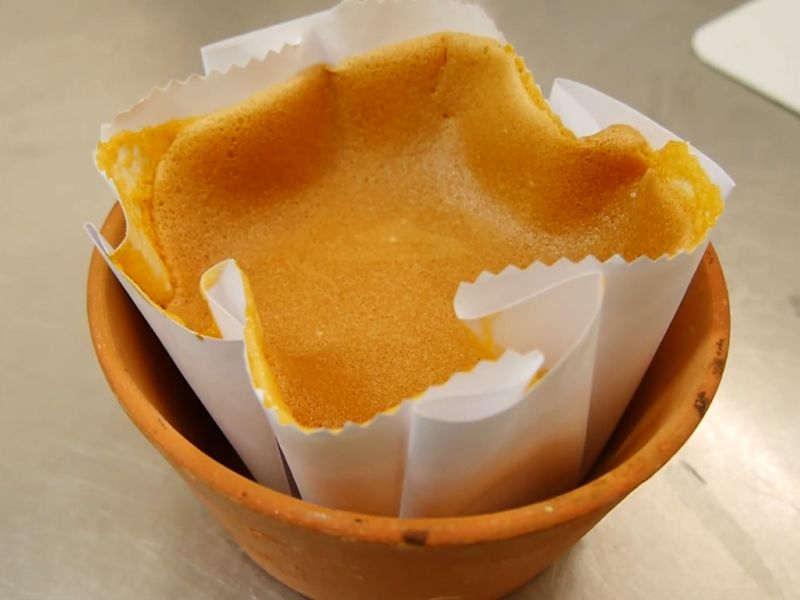
Húmido por dentro, dourado por fora — quem prova uma vez raramente fica por um só pedaço.
Doçaria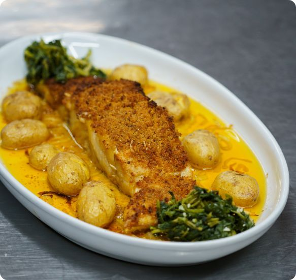
Grão-de-bico, ovo cozido, bastante azeite e a alma da cozinha minhota. Cada tasca tem a sua versão — e todas merecem ser provadas.
Prato Principal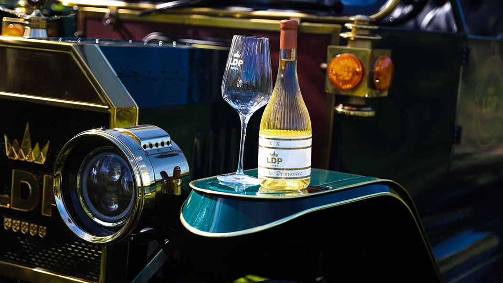
Fresco, levemente efervescente e produzido aqui ao lado — o vinho verde local combina com tudo, mas especialmente com o peixe e o marisco do Minho.
VinhosAlgumas das imagens que melhor representam Guimarães — para quem já visitou e quer recordar, ou para quem ainda está a planear a viagem.
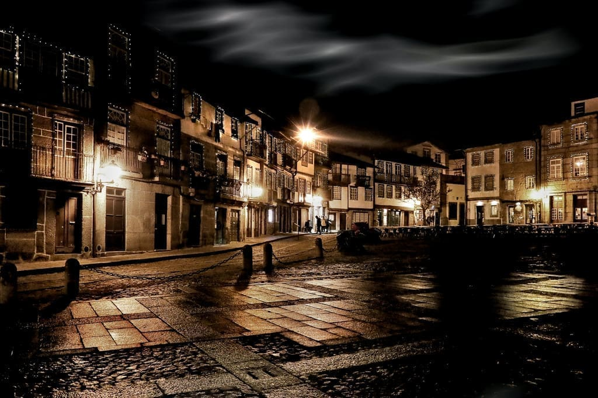
De junho a setembro a cidade não para — mas mesmo fora de época há sempre qualquer coisa a acontecer.
As maiores festas de Guimarães, com cortejo histórico, fogo de artifício e animação na cidade.
Festival de música contemporânea e artes no espaço cultural GNRation.
Recriação histórica com mercado medieval, espectáculos e gastronomia típica.
Corrida histórica pelas ruas e monumentos da cidade, aberta a todos os níveis.
Ficar no centro histórico é a melhor forma de aproveitar a cidade — a pé, sem pressa e sem perder nada.
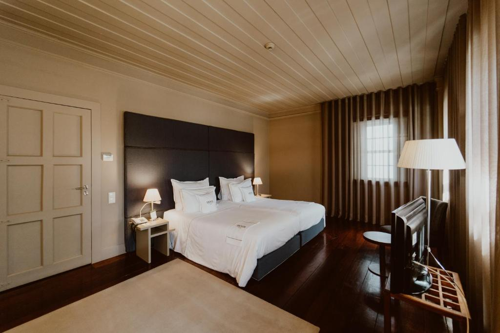
★★★★★📍 Centro Histórico
Fica mesmo no Largo da Oliveira, frente à Colegiada. Acordar com aquela vista ao pequeno-almoço tem um preço, mas vale cada euro.
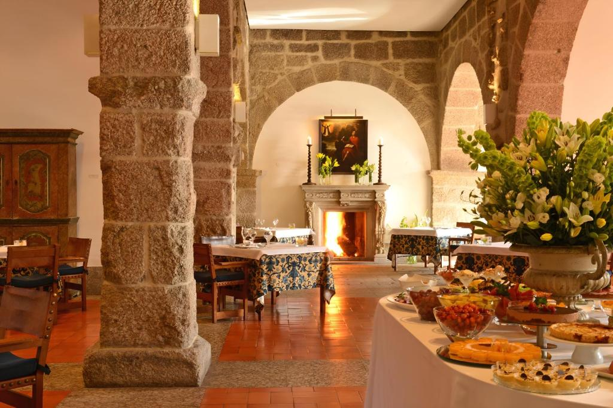
★★★★📍 Colina do Castelo
Instalada num mosteiro medieval recuperado, a pousada fica mesmo ao pé do castelo. O ambiente é diferente de qualquer hotel normal.
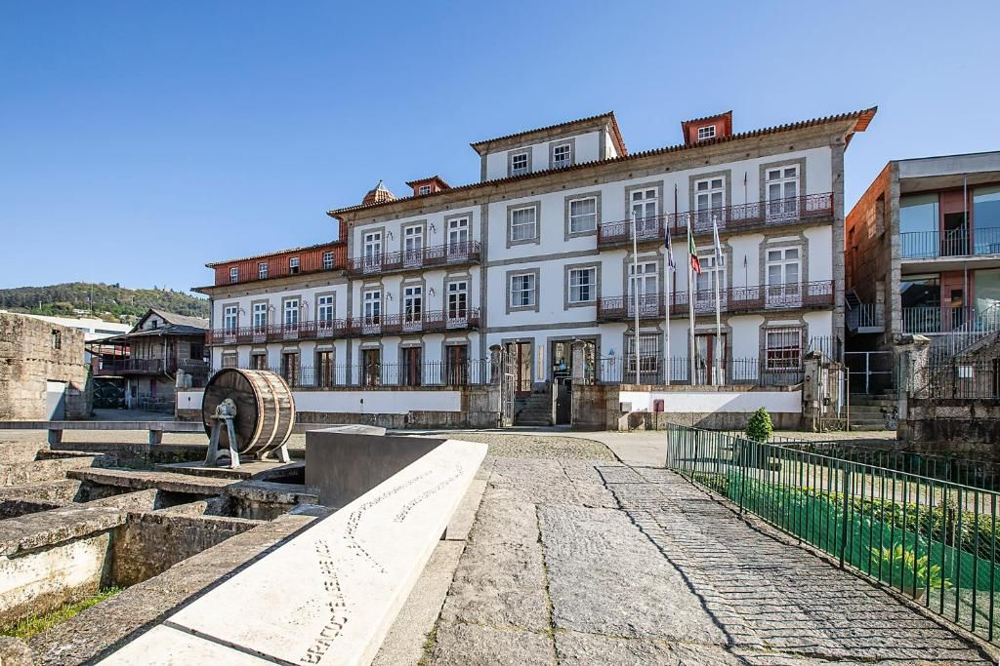
★★★📍 Centro da Cidade
Boa opção para quem viaja com orçamento mais apertado — quartos limpos, boa localização e a possibilidade de conhecer outros viajantes.
Antes de partir, vale a pena consultar estes sítios — têm horários, bilhetes, transportes e muito mais.
Portal oficial do município com serviços, notícias e informações locais.
cm-guimaraes.pt →Portal oficial de turismo com guias, roteiros e agenda de eventos.
guimaraesturismo.com →Página oficial da UNESCO sobre o Centro Histórico de Guimarães.
whc.unesco.org →Informação turística oficial de Portugal sobre Guimarães e a região Norte.
visitportugal.com →Site oficial do clube de futebol da cidade, um dos mais emblemáticos de Portugal.
vitoriasc.pt →Horários e bilhetes de comboio para chegar a Guimarães a partir de todo o país.
cp.pt →Tem dúvidas ou sugestões? Envie-nos uma mensagem e responderemos o mais brevemente possível.
Aeroporto Francisco Sá Carneiro (Porto) – a 50 km. Ligação por autocarro ou táxi.
Linha do Minho com ligação directa à cidade. Estação no centro urbano.
Via A3 (Porto–Braga) + A11 ou Via A7. Parques de estacionamento no centro.
Praça de Santiago, Centro Histórico
Tel: +351 253 421 221
Correio eletrónico: turismo@cm-guimaraes.pt